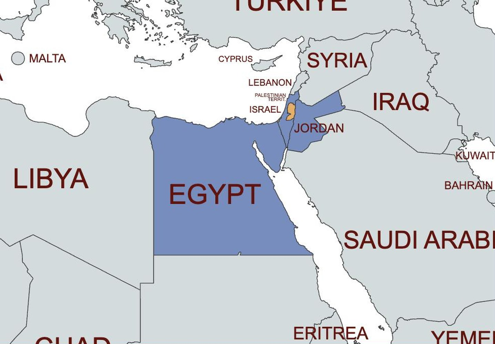
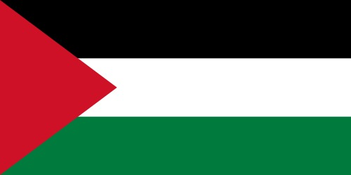
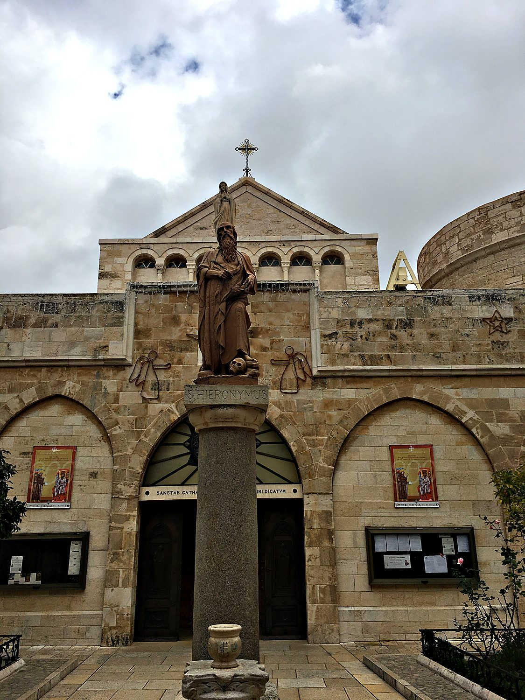
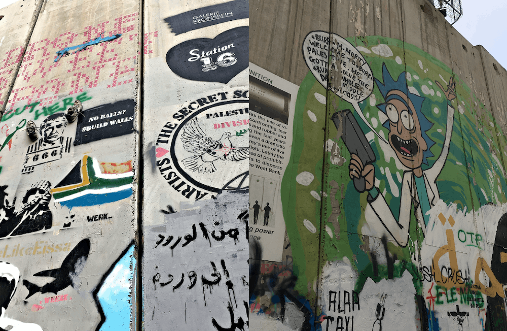
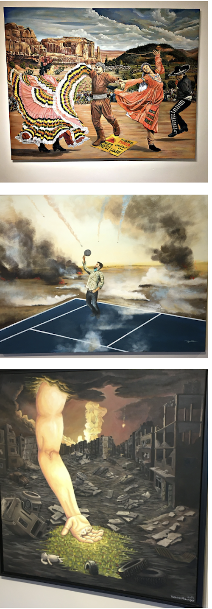

I visited Bethlehem in the West Bank as part of a Princeton school trip to Israel in January 2020 led by the former US ambassador Daniel Kurtzer. We had hoped to reach Ramallah, but the release of a controversial American peace plan had stirred unrest, and our plans shifted accordingly. In Bethlehem we were hosted by a Palestinian woman named Kawther, who welcomed a busload of foreign students into her home with homemade jam and boundless warmth. In a single day we visited the birthplace of Jesus, a refugee camp, and a hotel built to face a concrete wall. I came away unsettled and distraught at the limited agency Palestinians have, and with a deep respect for the people who had shared their stories.
Bethlehem sits just south of Jerusalem, in the part of the West Bank governed by the Palestinian Authority. It is one of the oldest continuously inhabited towns on earth, revered by Christians as the birthplace of Jesus and by Jews as the city of King David. Once home to a large Christian community, it remains a deeply significant place for Palestinians of all faiths. Today it is also a town shaped by the realities of occupation, ringed in places by a towering barrier and reached through Israeli checkpoints, its holy sites and its hardships sitting side by side. It was shocking to me how Palestinian citizens often face long lines and barriers just to move within the West Bank. As Americans, we were welcomed by the Israeli guards, and sped through the checkpoints easily.

The Palestinians are the Arab people native to this land, with roots reaching back through its long and layered history. Their modern national story is inseparable from 1948, the year the State of Israel was founded and hundreds of thousands of Palestinians fled or were expelled from their homes, an event they call the Nakba, or catastrophe. Many became refugees, and their descendants remain so today, some still living in camps a short walk from the villages they lost. In 1967 Israel occupied the West Bank and Gaza, and the decades since have been marked by a Palestinian struggle for self-determination, waged at times through negotiation and at times through violence. The PLO that administers most of the West Bank is widely seen as corrupt and in league with Israel. One lady I spoke with hinted that she supported Hamas, a group that has committed heinous atrocities towards Israelis and Palestinians both, because they are at least fighting for Palestinians. I was unsettled because I have nothing but contempt for Hamas, yet I can also understand how in desperation and with a lack of options one could turn towards them as a last resort.

The Oslo Accords of the 1990s created the Palestinian Authority and split the West Bank into a patchwork of zones with differing degrees of Palestinian and Israeli control, a fragmentation you feel constantly on the ground. The central unresolved questions remain borders, settlements, refugees, and the status of Jerusalem, which both peoples claim as their capital. Israelis and Palestinians tell the history of this land in profoundly different ways, and one lesson the trip drove home is that a single event can be a triumph to one side and a tragedy to the other. The Palestinian flag flies over Bethlehem in bands of black, white, and green with a red triangle, the pan-Arab colours of a nation still seeking a state of its own.
The heart of Bethlehem is the Church of the Nativity, built over the grotto that Christian tradition marks as the birthplace of Jesus. It is one of the oldest churches in continuous use anywhere, its foundations laid in the fourth century and rebuilt under the emperor Justinian in the sixth. In 2012 it became the first UNESCO World Heritage Site inscribed under Palestine. Inside, beneath layers of hanging lamps and ancient mosaics, pilgrims stoop through a deliberately tiny door and descend to a silver star set into the floor, marking the spot itself. The building is shared, not always peacefully, by several Christian denominations, a small model of the whole region's contested holiness.

Impossible to miss in Bethlehem is the barrier that Israel began building during the violence of the early 2000s. Israel calls it a security fence, credited with helping to stop a wave of suicide bombings, while Palestinians call it the separation or apartheid wall and point out that it cuts deep into West Bank land and divides communities. Here it takes the form of a concrete wall some eight metres high, and Palestinians and visiting artists have turned it into one of the world's largest canvases of protest. Doves, slogans, and murals cover the grey concrete, including, to my delight, a portrait of Rick from Rick and Morty. I bought a sheet of stickers reading "Make hummus not walls," which captured the mix of humour and heartbreak as well as anything could.

Facing the wall at its bleakest point stands the Walled Off Hotel, opened in 2017 by the British street artist Banksy and advertised, with grim wit, as having "the worst view in the world." Every window looks onto the barrier. Inside, its walls are hung with biting protest art and a small museum lays out the Palestinian experience of the conflict. The pieces range from the furious to the tender, including scenes of Palestinian dabke dancers set defiantly against soldiers and ruins. Whatever one concludes about the politics, the hotel is a striking example of art insisting on being heard. It was inspiring that a people that have been through so much hardship can still find some level of solace and resistance through art.
